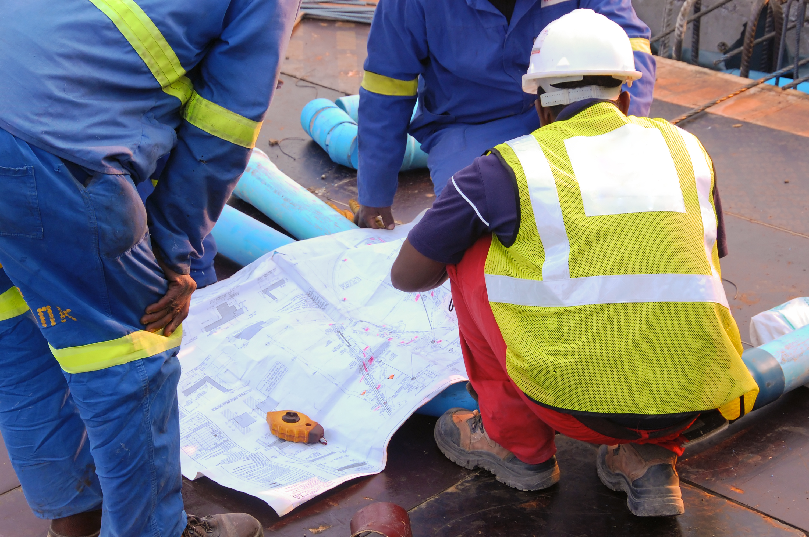
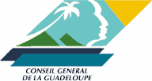
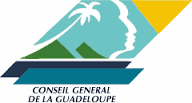

09 70 44 49 34
contact@geodetect.fr



SERVICES NON-DESTRUCTIFS
Détection et Cartographie de réseaux enterrés
Services non-destructifs de détection de réseaux
- Type de réseaux:
- Tous : Câbles électrique & Eclairage & Télécom, Canalisations Eau & Assainissement, Conduites EP
- Applications:
- Mise à jour des plans recollement & réseaux & DICT, Contrôle des positions et profondeurs des réseaux, Sécurisation de sondages & forages.
- Solutions:
- Marquage au sol, Cartographie de réseaux, Imagerie en 3D

Marquage au sol
Cartographie 2D

Imagerie 3D
Auscultation d'ouvrages
Inspection non-destructive d'ouvrages
- GEODETECT inspecte vos ouvrages pour détecter/diagnostiquer:
- les matériaux, Aciers, Armatures, Câbles, Cavités, Fissures, Zones détériorées, Épaisseurs d'enrobage, etc...
- Applications:
- Diagnostic sismique de structures, Réhabilitation d'un ouvrage, Sécurisation de perçage, Contrôle de plan de coffrage, Expertise en cas de contentieux
- Solutions:
- Piquetage sur l'ouvrage, Imagerie 2D, Imagerie 3D
Marquage sur l'ouvrage
Imagerie 2D

Imagerie 3D
Exploration Géophysique
Service de prospection géophysique pour l'environnement et les ressources naturelles
- Geodetect localise différents d'anomalies enterrés:
- Cavités, Vestiges, fûts, Zones de pollution, Décharges, Potentiel de gisement
- Applications:
- Recherches archéologiques, Aide au diagnostic de pollution, Exploitation de gisement/source
- Solutions:
- Log 2D / Imagerie 2D, Imagerie 3D

Imagerie
Sur un pont

Imagerie 2D
Zone de cavité

Imagerie 3D
Zone de pollution
Réseaux détectés: 554 Km
Plans mis à jour: 223
Ouvrages Inspectés: 125
A PROPOS
La Société
GEODETECT est une société en géophysique, spécialisée dans l'auscultation et l'imagerie non-destructive du sous-sol et des ouvrages.
Notre organisation repose sur:
- Une expérience & expertise métier en géophysique
- Le respect de la qualité et des délais de réalisation des projets
- Une stratégie d'innovation via un réseau international
Nos Domaines d’applications sont diverses :
- Les VRD:
- Télécoms, Électricité, Éclairage, Assainissement
- Le Génie Civil:
- Bâtiment, Travaux publics, Géotechnique, Réhabilitation
- Les Géosciences:
- Mine, Pollution du sol, Archéologie, Mapping, Cartographie
Les Habilitations
GEODETECTs'inscrit dans une démarchede performance et certification
Geodetect s'est entouré de personnels qualifiés:
- Habilitation Électrique (H0B0, B2V, HE mesure, BE mesure, H2)
- Habilitation GRDF (Z724)
- Application norme AFNOR DT/DICT (NFS70-003-1)
Geodetect est affilié à différentes fédérations:
- FNEDRE: Fédération Nationale des Entreprises de Détection de Réseaux Enterrés
- FSTT: France Sans Tranchée Technologies
- AFTES: Association Française des Tunnels et de l'Espace Souterrain
Les Méthodes
GEODETECT procède de manière identique en combinant différentes méthodes géophysiques
Notre processus:
- Collecte des infos et Inspection visuelle
- Mission de détection/auscultation - Traitement des données
- Presentation/livraison des résultats
Nos principales méthodes utilisées :
- Radar Géophysique:
- Imagerie géophysique du sous-sol
- Radiodetection:
- Détection de signaux electro-magnétique
- Méthodes éclectro-magnétiques (sur demande):
- EM / CSAMT / IP / Tomographie
- Structurescan:
- Diagnostic d'ouvrage
- Pachométrie:
- Imagescan d'ouvrages
- Sclérométrie:
- Dureté du béton
- Autres méthodes:
- pour mesurer la corrosion et sa vitesse
contact@geodectect.fr
VOS AVANTAGES
Profesionnels
GEODETECT répond à vos besoins de Détection, Cartographie et Auscultation.
- Gagnez en rentabilité:
- en réduisant vos délais de projets
- Augmenter votre productivité:
- en éliminant les tranchées inutiles
- Sécurisez votre personnel:
- en évitant les dangers invisibles


Collectivités
GEODETECT répond à vos besoins de Détection, Cartographie et Auscultation.
- Gagnez en rentabilité:
- évitez les sanctions financières, en cas de dommages
- Maitrisez la connaissance de son sous-sol:
- Localisez la position de vos réseaux enterrés
- Bénéficiez d'une image éco-responsable:
- Réduisez les gènes occasionnés par les fouilles/tranchées


Particuliers
GEODETECT répond à vos besoins de Détection et Auscultation.
- Faites vos travaux l'esprit tranquilles:
- Localisez la position de vos réseaux enterrés
- Abattre un mur, en toute quiétude:
- en connaissant le matériau et le type de mur
- Diminuer votre budget:
- Eliminez les fouilles et perçages inutiles


-
Ils nous ont fait confiance :


 
